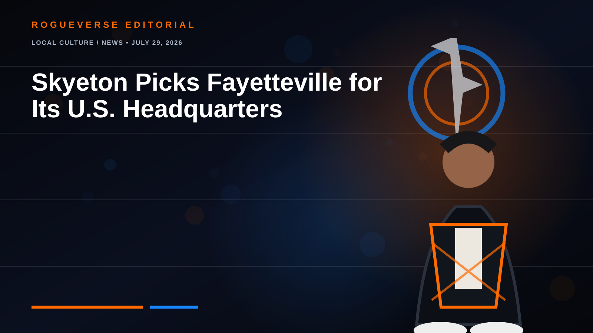

LOCAL CULTURE / NEWS • JULY 29, 2026
Skyeton Picks Fayetteville for Its U.S. Headquarters
The Ukrainian drone manufacturer promises skilled jobs and investment—but residents deserve a clear view of the payoff.

Skyeton selected Fayetteville for its first U.S. headquarters and American manufacturing operation. The project is expected to bring 162 jobs, with reported average pay around $70,759, backed by performance-based incentives.
The opportunity—and the questions
Advanced aerospace manufacturing could create a path from local training and military experience into technical civilian careers. Citizens should still ask how many jobs will be filled locally, what training partnerships will exist, and what oversight governs testing, data, noise and environmental impact.
Being pro-growth does not mean writing a blank check. The best deal gives Fayetteville durable skills, transparent accountability and jobs residents can reach.
Status: headquarters selection reported July 2026; incentives are tied to performance.
← RogueVerse News